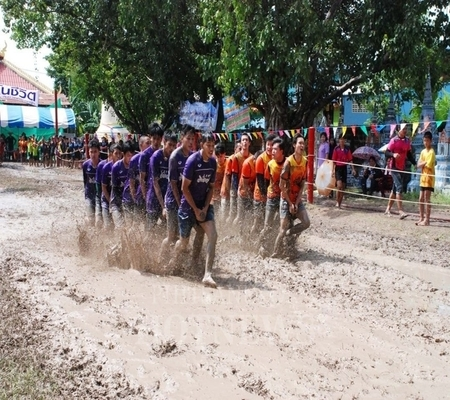
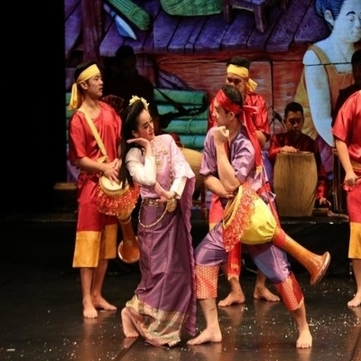
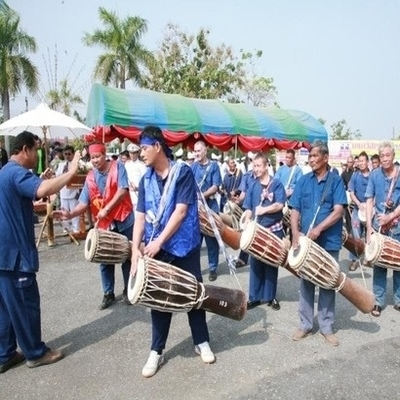
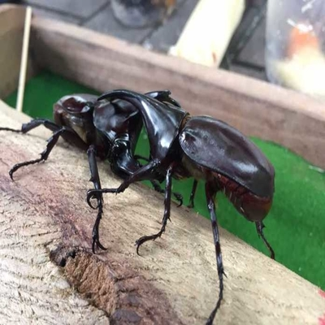
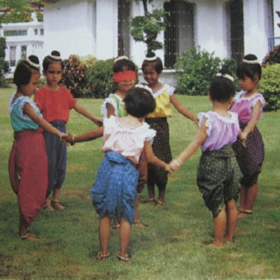

การแข่งขันเรือบก จ.พิษณุโลก
อุปกรณ์
ไม้ไผ่ขนาด ๘ เมตร แทนลำเรือแข่งขนาดใหญ่ และผู้แข่งขัน ๙ คน และไม้ไผ่ ๕ เมตร แทนลำเรือแข่งขนาดเล็กและผู้แข่งขัน ๖ คน
วิธีการเล่น
๑. รับสมัครเรือแข่งขนาดอายุ ๙-๑๐ ปี และ ๑๐-๑๔ ปี ให้ผู้แข่งขันเรือบกแต่ละขนาด ยืนคร่อมลำไม้ไผ่ แข่งครั้งละ ๒ ลำ
๒. ปล่อยเรือบกออกไปพร้อมกันโดยให้วิ่งในโคลนและจับเวลา
๓. เรือบกลำที่ชนะเลิศ ต้องชนะ ๒ เที่ยวในกำหนด ๓ เที่ยวซึ่งเป็น กติกาเดียวกับการแข่งขันเรือยาวทั่วไป
คุณค่าของการแข่งขันเรือบก
เป็นการส่งเสริมการออกกำลังกาย ฝึกความขยัน อดทน มานะพยายาม เป็นการส่งเสริมความสามัคคีและฝึกเด็กให้รู้จักมีน้ำใจนักกีฬา รู้แพ้ รู้ชนะและรู้อภัย

การรำกลองยาว จ.นครสวรรค์
อุปกรณ์
กลองยาวและฆ้อง
วิธีการเล่น
ตีกลองยาวและฆ้องตามจังหวะ ผู้ที่รำจะรำตามเสียงดนตรีด้วยท่ารำที่สวยงามต่าง ๆและจะจบลงด้วยการต่อตัวขึ้นไปร่ายรำบนกลองยาว
คุณค่า
ใช้เล่นเพื่อความสนุกสนาน และ เพื่อเป็นการอนุรักษ์ศิลปะพื้นบ้านที่ดีงาม ของอำเภอพยุหคีรี จังหวัดนครสวรรค์
การเส็งกลอง จ.เพชรบูรณ์
อุปกรณ์และวิธีการเล่น
อุปกรณ์ กลองสองหน้า ไม้กลอง วิธีการเล่น ผู้เล่นใช้ไม้กลองตีกลองเพื่อให้มีเสียงดัง การตัดสินจะพิจารณาจากเสียงกลองที่ได้มาตรฐาน และลีลาการตีกลอง
โอกาสหรือเวลาเล่น
เล่นในงานประเพณีพื้นบ้าน งานเทศกาลต่าง ๆ เช่น งานบุญบั้งไฟ งานรื่นเริงประจำปี และงานเฉลิมฉลองต่าง ๆ
คุณค่า
การเส็งกลองเป็นการละเล่นพื้นบ้านที่มีคุณค่าอย่างยิ่งเพราะเป็นการสร้างเสริมความสามัคคี ในหมู่คณะ ส่งเสริมการออกกำลังกาย สร้างสรรค์ผลงานด้านศิลปะหลาย ๆ ด้านประกอบกัน ได้แก่ ศิลปด้านการแสดง ดนตรีและการละเล่น รวมทั้งงานหัตถกรรม


ชนกว่าง จ.เชียงใหม่
ฤดูกาลเล่นชนกว่าง จะเริ่มต้นตั้งแต่กลางฤดูฝนไปจนถึงต้นฤดูหนาว โดยชาวบ้านจะไปจับตามกอไม้รวก ด้วยการเขย่าให้ตกลงมา ถ้าเห็นว่ามีลักษณะดีตรงตามชนิดที่จะสามารถนำมาเลี้ยงไว้ชนได้ก็จะนำมาเลี้ยง โดยให้อาหารจำพวกหน่อไม้ ลูกบวบ กล้วยสุก อ้อย
ปัจจุบัน การเล่นชนกว่างยังคงนิยมเล่นกันอยู่ทั้งเด็กและผู้ใหญ่ ถ้าผู้ใหญ่เล่นมักนิยมไปเล่นในบ่อนเพื่อการพนัน แหล่งซื้อหากว่างที่รู้จักกันดีอยู่ตรงริมแม่น้ำปิง เชิงสะพานนวรัฐ ในเขตอำเภอเมืองเชียงใหม่และตามกาดหรือตลาดทั่วไป
การเล่นโพงพาง จ.ตาก
วิธีการเล่น
ยิงฉุบกันว่าใครจะเป็นผู้แพ้ต้องปิดตาเป็นโพงพางตาบอด ผู้เล่นคนอื่น ๆ จับมือเป็นวงกลมร้องเพลง โพงพางเอ๋ย โพงพางตาบอด รอดเข้ารอดออก โพงพางตาบอดปล่อยลูกช้างเข้าในวง ขณะเดินวนรอบ ๆ โพงพางตาบอดร้องเพลง ๑-๓ จบ แล้วนั่งลงโพงพางจะเดินมาคลำคนอื่น ๆ ซึ่งต้องพยายามหนี และจะต้องเงียบสนิท หากโพงพางจำเสียงหัวเราะ รูปลักษณะได้จะเรียกชื่อ ถ้าเรียกคนถูกต้องออกมาปิดตาเป็นโพงพางต่อไป ถ้าไม่ถูกก็ต้องเป็นโพงพางอีกไปเรื่อย ๆ
โอกาสในการเล่น
เป็นการละเล่นพื้นบ้านที่เด็ก ๆ เล่นกันโดยทั่วไป
